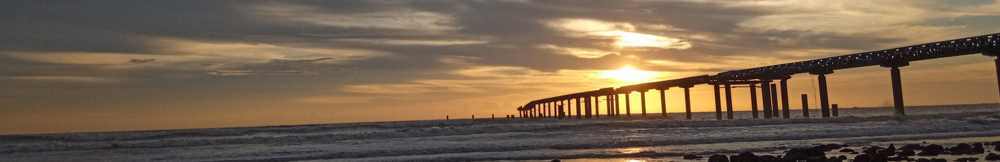
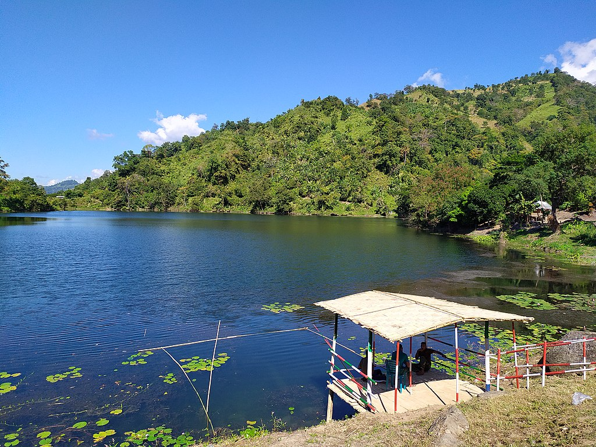
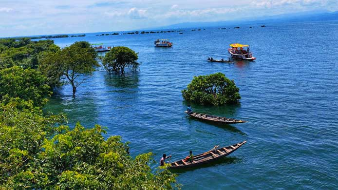
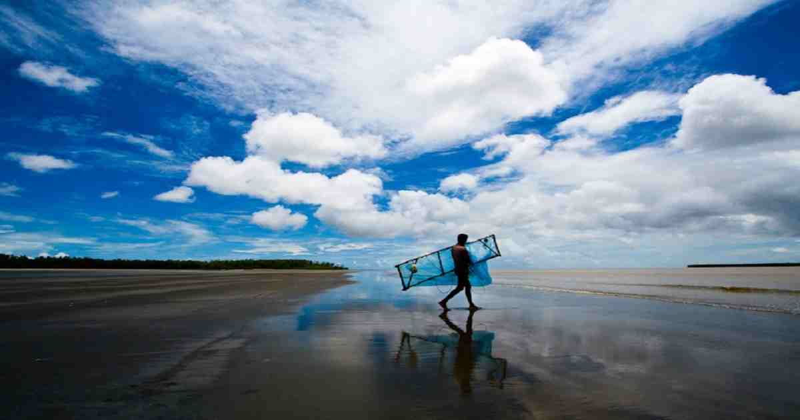

| Spot no. | Spot Name | Location | Distance From Dhaka approximately (km) |
|---|---|---|---|
| 01 | Inani Beach | Cox's Bazar | 322 |
| 02 | Boga Lake | Bandorban | 387 |
| 03 | Tanguar Haor | Shunamganj | 290 |
| 03 | Kuakata | Kuakata | 406 |

Inani Beach (Bengali: ইনানী সৈকত), part of Cox's Bazar Beach, is an 18-kilometre-long (11 mi) sea beach in Ukhia Upazila of Cox's Bazar District, Bangladesh.It has a lot of coral stones, which are very sharp. These coral stones look black and green, and they are found in summer or rainy seasons.

Bogakain Lake, also called Baga Lake or Boga Lake, is a lake located in Ruma Upazila in the hill district Bandarban, Bangladesh.[1] It is a natural sweet and deep water lake. Its height from sea level is nearly 1,246 feet (380 m). Geologists believe that it was created by collection of rain water in summer. The lake is irregular in shape.[1] A team of geologists surveyed this lake in 1973. They found the lake's water to be too acidic for any form of life. By the year 1995, the lake's water became abundant with plants and fish. The local residents culture and gather Tilapia fish in this lake. People of Bawm tribe migrated from Saikot para to Boga Lake and set up this village. A local legend tells that the lake was created after the inhabitants of a Khumi village killed and later devoured a deity who later reappeared to them in the form of a dragon. Instantly an earthquake occurred, the hillside caved in, and the village disappeared and formed a deep lake.

Tanguar Haor (Bengali: টাঙ্গুয়ার হাওর; also called Tangua haor), located in the Dharmapasha and Tahirpur upazilas of Sunamganj District in Bangladesh, is a unique wetland ecosystem of national importance and has come into international focus. The area of Tanguar Haor including 46 villages within the haor is about 100 square kilometres (39 sq mi) of which 2,802.36 ha2 is wetland. It is the source of livelihood for more than 40,000 people. Bangladesh declared it an Ecologically Critical Area in 1999 considering its critical condition as a result of overexploitation of its natural resources. Every winter the haor is home to about 200 types of migratory birds. In 1999–2000, the government earned 7,073,184 takas as revenue just from fisheries of the haor. There are more than 140 species of fresh water fish in the haor. The more predominant among them are: ayir, Cat fish, baim, tara, gutum, gulsha, tengra, titna, garia, beti, kakia. Gulli, balua, ban tulsi, nalkhagra and other freshwater wetland trees are in this haor

Kuakata (Bengali: কুয়াকাটা) (Burmese/Rakhine/Arakanese) is a town in southern Bangladesh known for its panoramic sea beach. Kuakata beach is a sandy expanse 18 kilometres (11 mi) long and 3 kilometres (1.9 mi) wide.From the beach one can have an unobstructed view of both sunrise and sunset over the Bay of Bengal.
If you think we should include information about any other places, fill the form below and let us know what you want us to know